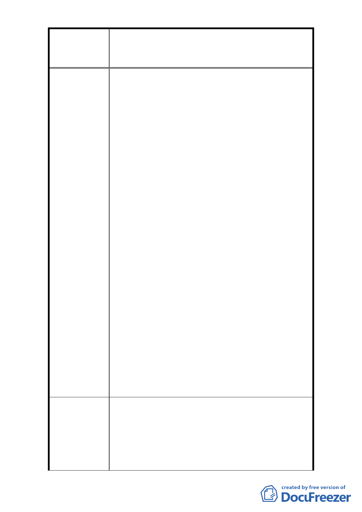

修訂臺北市大安區青田街保存區聚落風貌保存專用區細部計
案
名
畫、變更部分第三種住宅區、第三種商業區(特)為第三種住宅區
(特)(日式宿舍)及第三種商業區(特)(日式宿舍)暨劃定週邊地
區都市設計管制細部計畫案
應予保障之規定，旨在確保個人依財產之存續狀態
行使其自由使用、收益及處分之權能。如因公用或
其他公益目的之必要，國家機關應給予相當之補
償，方符憲法保障財產權之意旨。
3.細部計畫規範毗鄰所謂「日式宿舍」之建築基地，
須留設側院，於法無據，並且違憲：
(1) 依「文化資產保存法」（以下稱文資法）第 3 條第
1 項第 1 款（文化資產之定義），僅如細部計畫所
稱「古蹟、歷史建築、聚落」，並無「日式宿舍」
此名詞，根本無法要求所有權屬（管理機關）負管
理維護之責。
(2) 依文資法，日式宿舍並不存在，卻要求毗鄰 26 棟
日式宿舍（其中 5 棟已滅失，現為空地）之建築基
地，留設側院，已違反憲法第 15 條保障人民財產
之規定。
4. 政府機關必須依法而治，公務員應依法行政：
(1) 無論機關組織之職權或涉及人民基本權利之事
項，應均有「法律」之規定或「法律」明確授權之
依據，即所謂「法律保留原則」。憲法第 23 條規
定：「以上各條列舉之自由權利，除為防止妨礙他
人自由、避免緊急危難、維持社會秩序或增進公共
利益所必要者外，不得以法律限制之。」即是該原
則之具體表現。
(2) 憲法第 24 條規定：「凡公務員違法侵害人民之自
由或權利者，除依法律受懲戒外，應負刑事及民事
責任。被害人民就其所受損害，並得依法律向國家
請求賠償。」
1. 重新檢視公有財及私有財之設計規範。
2. 請市府相關單位研擬具體的補償案。
3. 定義「日式宿舍」：
建 議 辦 法 (1) 為保存極富歷史價值之「全台北市」日式宿舍，文
化局應與文建會共同研商，以「法」的角度，具體
及有效來保護文化資產。民主國家是「法治」社會，
- 22 -